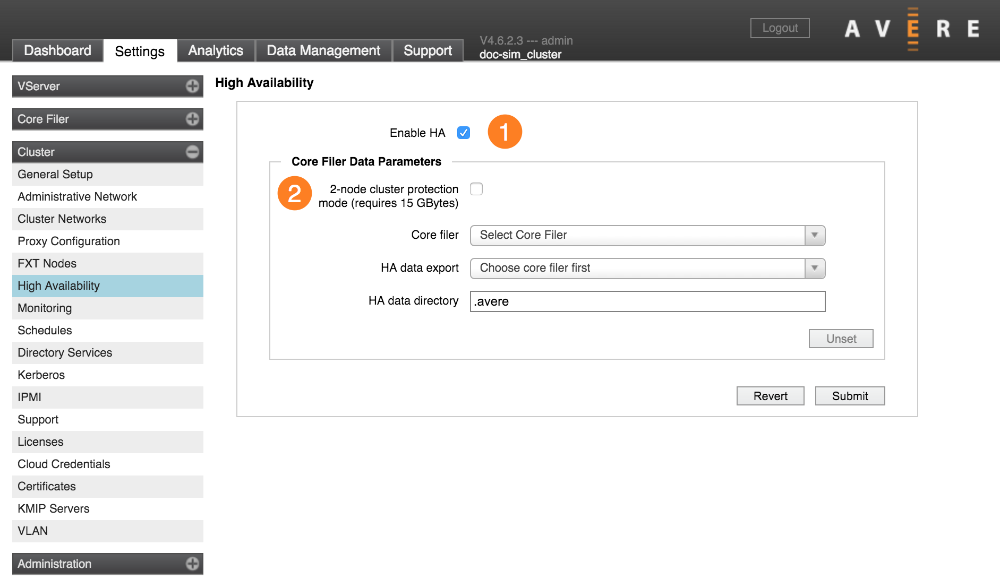

Cluster > High Availability
The High Availability settings page is used to configure high availability (HA) for the cluster. HA is an optional feature, but using it is recommended to provide data protection and avoid service interruptions.
There are two major sections on the settings page. The HA checkbox (1) turns the basic high availability feature on or off. The Core Filer Data Parameters section (2) enables and configures an optional feature that stores backup cache changes on a core filer. These are described in more detail below.
Note
In Avere OS 5.1 and later releases, the Core Filer Data Parameters section is absent. Use the checkbox to enable or disable HA.
About High Availability
Avere OS’s High Availability (HA) feature provides access to cached data even if nodes fail or become temporarily unavailable. In an HA configuration, each node caches written information for another node in the cluster.
High availability is enabled at the cluster level; this setting affects all nodes and all vservers in the cluster.
Standard HA function requires that each node reserve 20% of its disk space to store copied data changes from another node. With HA enabled, a client write to a particular node is stored both on the original node and on its partner node before the write operation is acknowledged. Partnerships are distributed across all nodes in the cluster - for example, in a three-node cluster Node 1 might cache writes for Node 3 and send its writes to be backed up by Node 2.
If a node fails, the cached information about its files can be accessed from its HA partner. As soon as the failure is detected, that partner also writes the copied information to another node or to a core filer so that there are always at least two copies of the data.
HA can be enabled on clusters of two nodes or more.
Optionally, you can configure your HA system to back up the cached content to an Avere-managed directory on a core filer. This feature was designed to improve data availability for two-node clusters, but it can be used with larger configurations. Read Two-Node Cluster Protection Mode to learn more.
Enabling High Availability
To turn on high availability for your cluster, click the Enable HA checkbox on the High Availability settings page. Use the Submit button at the bottom of the page to save your configuration.
Note that cluster nodes might need to move data from their caches to the core filers to make room for HA storage immediately after you change this setting.
Disabling High Availability
You can disable high availability for the cluster by un-checking the Enable HA checkbox and clicking Submit.
For systems with two-node cluster protection mode turned on, disabling HA does not remove the HA data repository on the core filer. Follow the instructions below in Unsetting the HA Data Directory to completely remove this configuration.
Two-Node Cluster Protection Mode
The two-node cluster protection mode High Availability setting backs up node data to a core filer in addition to backing up content on each node. This option provides additional protection if the cluster is reduced to one working node.
This option is most useful for clusters that have only two nodes.
Two-Node Cluster Protection Mode requires an Avere-managed data repository of at least 15GB on a core filer with reliable speed and accessibility.
Follow these steps to set up two-node protection:
Create a core filer export that will serve as the HA data repository. Follow the procedure for creating and exporting a directory on your core filer (refer to your storage provider’s documentation), and use the VServer > Namespace settings page to create a junction to that export.
Important
- You must create the directory for the data repository before enabling high availability.
- Do not allow the data repository to run out of space. The repository on the core filer must be 15GB or larger. If the cluster cannot read and write to the data directory, HA services can fail.
- Choose a high-capacity, high-performance core filer, with a reliable network connection to the Avere cluster, to use for the data repository.
- Only nodes from this cluster should have read/write and root access to the Avere-dedicated directory. It is strongly recommended that no non-Avere data be stored on the export.
Check the Enable HA checkbox and also select 2-node cluster protection mode (requires 15 GBytes).
From the Core filer drop-down list, choose the core filer on which the repository resides. This is the cluster’s name for the core filer, not necessarily the network name for the core filer.
From the HA data export drop-down list, select the Avere-dedicated export on the core filer. If you recently created the export and do not see it in the list, refresh the page.
In the HA data directory field, enter the name of a directory on the selected export to which the cluster can write configuration files. Using the default name,
.avere, is strongly recommended.Note
- The directory must have a name; do not use an empty string.
- Do not create the directory by using the mkdir command or a similar utility; the cluster creates the directory itself.
Click the Submit button at the bottom of the page to commit changes. Use the Revert button to abandon any changes that you have made.
Note
It is strongly recommended that you do not change the export and directory for the Avere repository after you specify them. See the next section, Unsetting the HA Data Directory for information on changing the export and directory for the data repository.
Unsetting the HA Data Directory
You must disable HA before you can change or remove the HA repository.
After you click the Submit button to disable HA, the Unset button is active.
- Click Unset to unlock the directory settings.
- Make changes to the Core filer, HA data export, or HA data directory parameters.
- Click the Submit button to save changes, or click Revert to return to the last saved settings.